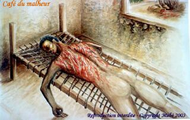

Voici un article écrit le 20 du mois. Le 20 desamb, le jour de la fêt caf. Cette fête déjà célébrée ici est l’anniversaire de l’abolition de l’esclavage sur l’île de la Réunion. L’île, qui s’est fortement peuplée par l’importation de nombreux esclaves dans les plantations
de café puis de canne à sucre, célèbre aujourd’hui cette date de première importance avec une ferveur renouvelée.
Ce jour n’est férié que depuis 1981 mais la fête est déjà une institution et comme les réunionnais dansent en métropole, ils le font tout spécialement ce jour-là. À la réunion les «kabars» (concerts) sont improvisés dans la rue.

{% Image page, "mabe_03-cafedumalheur.jpg", "peinture de mabé présentant un homme nu le dos en sang." %}
Mabé peint parfois la terrible réalité que fut l'esclavage, ici un homme le dos en sang sur une toile qui s'appelle café du malheur. L'image contraste avec ma présentation du café qui rappelle la douceur et les plaisirs que ce nouveau brevage apportait en Europe au prix de la souffrance de ceux qui le faisait pousser.
L’année dernière, les habitués du forum volcréole (aujourd’hui disparu et remplacé par un site de remplissage) ont partagé ensemble sur ce sujet. Des peintures de 2002 du peintre Mabé ont été mises en ligne, qui retracent cette période de l’esclavage, montrant la triste vérité comme les rêves de liberté. La peinture de Mabé oscille justement entre le réel et l’onirique avec une influence réunionnaise et exotique certaine. De nombreuses toiles sont visibles sur son site que je vous recommande.
{% Image page, "DSC2916-Mabé-peint-une-fresque.jpg", "Mabé accroupi peignant une fresque représentant une anse de mer avec des palmiers" %}
Mabé peint une fresque chez lui. Photo issue de sa collection personnelle ayant illustré un article de magazine.
{% Image page, "DSC2916-Mabé-peint-une-fresque.jpg", "Mabé accroupi peignant une fresque représentant une anse de mer avec des palmiers" %}
Mabé peint une fresque chez lui. Photo issue de sa collection personnelle ayant illustré un article de magazine.
Le site perso de Mabé que je présentais a aujourd’hui disparu. Par contre, on peut toujours admirer ses peintures sur la galerie en ligne aigrsc, ainsi qu’une interview (maintenant hors ligne) qu’il a donnée en 2022 pour le magazine maisons créoles aussi intéressépar sa maison de l’Entre-Deux, à La Réunion, servant de cadre à son atelier.